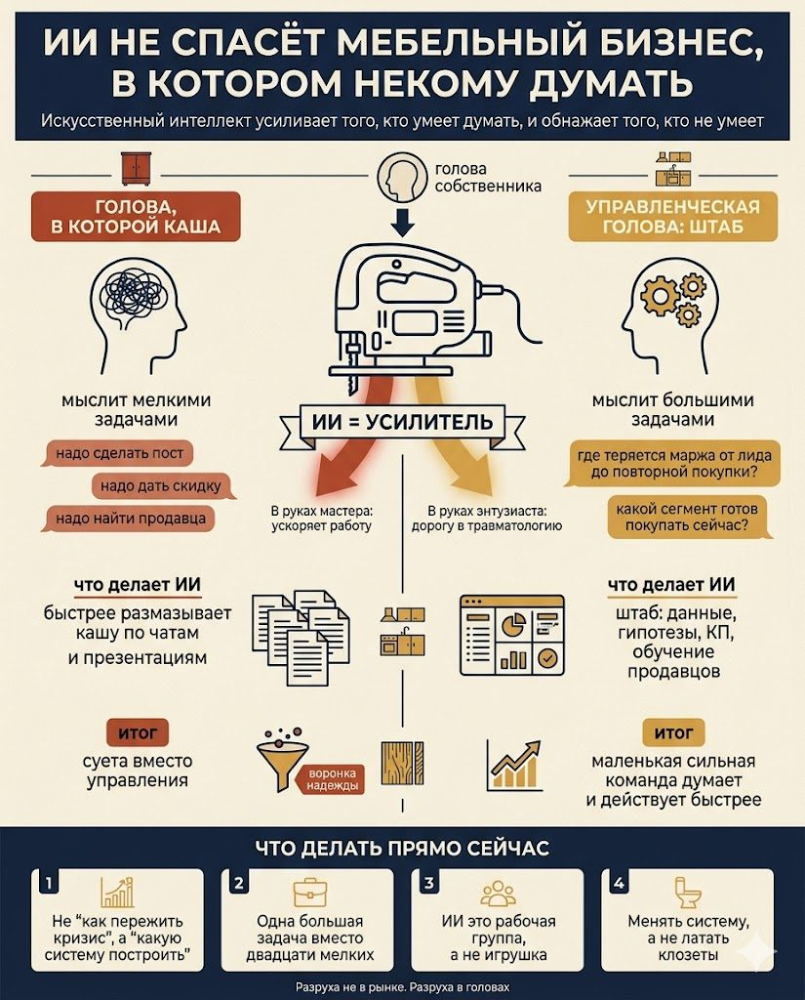

«Разруха не в клозетах, а в головах», говорил профессор Преображенский у Булгакова, и, как это обычно случается с по-настоящему точными фразами, она прекрасно переносится из московской квартиры двадцатых годов в мебельный бизнес двадцать шестого, не теряя по дороге ни грамма смысла. Потому что сегодня изрядная часть владельцев мебельных компаний искренне уверена, что главная их беда сидит снаружи, на рынке: клиенты перестали покупать, трафик подорожал, маркетплейсы душат, банки не дают, поставщики наглеют, менеджеры тупят, дизайнеры выпрашивают скидку, а покупатель приходит в салон, меряет, фотографирует и уходит покупать почти такое же где-то в интернете, на семнадцать рублей дешевле и без всякой благодарности.
Разруха, спору нет, действительно есть. Вопрос только в том, где именно она прописана: на рынке, в рекламе, в салоне, в CRM, на маркетплейсах, в головах сотрудников, или всё-таки в голове собственника, которому по-прежнему хочется управлять мебельным бизнесом так, будто на дворе спокойный две тысячи шестнадцатый, клиенты сами приходят, менеджеры сами продают, производство само себя планирует, а остатки сами, без посторонней помощи, превращаются в деньги. Плохая новость в том, что так больше не работает и работать не будет. Хорошая в том, что именно поэтому впервые за долгое время появляется шанс для тех, кто готов перестать мыслить мелко.
Сам механизм, из-за которого компания делает всё как раньше, иногда даже аккуратнее, а продаёт хуже, в этой брошюре уже подробно разобран в первой главе, так что повторяться не буду, замечу лишь главное. Кризис это не только тот момент, когда в кассе становится меньше денег, это момент, когда привычная модель внезапно перестаёт давать привычный результат, а собственник ещё какое-то время по инерции жмёт на ту же педаль и искренне удивляется, почему машина больше не едет. Рынок ведь долгие годы прощал почти любую неуклюжесть, и в этой тепличной щедрости компания так и не стала системой: она осталась набором привычек, нередко очень дорогих, которые в сытые годы выглядели как продуманная стратегия, а в голодные обнажились как обычное везение, помноженное на инерцию.

Главная проблема вовсе не в том, что появился ИИ
Сейчас принято говорить, что искусственный интеллект всё перевернёт, и это чистая правда, но с одной маленькой, мерзкой и крайне неудобной поправкой: он ничего не перевернёт у того, кто не умеет думать. ChatGPT при всём желании не волшебная палочка и не новый менеджер по продажам, который пришёл, сам во всём разобрался, сам распутал CRM, сам переписал скрипты, сам выстроил воронку, сам договорился с маркетологом, сам выгрузил остатки, сам нашёл причину упавшей конверсии и сам, аккуратно подбирая слова, сообщил собственнику, что у них тут, вообще-то, не кризис, а управленческий зоопарк с лёгким уклоном в самодеятельность.
ИИ это усилитель, и в этом вся суть. Если у руководителя есть ясная задача, выстроенная логика и трезвое понимание собственного бизнеса, нейросеть способна разогнать работу в разы. Если же в голове каша, она поможет ровно в одном: размазать эту кашу по документам, чатам и презентациям заметно быстрее и в куда большем количестве.
Ещё недавно собственник не брался за крупные управленческие задачи по понятной и честной причине: одному их не вытянуть, нужен то аналитик, то маркетолог, то руководитель отдела продаж, то бизнес-ассистент, то финансист, то методолог, то просто живой человек, который наконец объяснит, почему реклама вроде бы работает, а денег в кассе всё равно нет. Сегодня часть этой работы действительно можно делать с помощью ИИ, и здесь важно не обмануться главным словом, а слово это простое: делать. Не поиграться, не попросить написать дежурный пост, не сгенерировать картинку кухни в стиле богатой тёщи, а по-настоящему встроить инструмент в управленческий контур, туда, где принимаются решения и считаются деньги.
Собственнику мебельного бизнеса пора мыслить как руководителю большой компании
Вот здесь и начинается самое неприятное. Беда множества мебельных компаний вовсе не в том, что они маленькие, а в том, что их владельцы думают маленькими задачами. Надо сделать пост, надо поднять продажи, надо найти нормального продавца, надо выйти на маркетплейсы, надо запустить сайт, надо внедрить CRM, надо что-то решить с рекламой. Это не задачи, это управленческие вздохи, которые приятно произносить вслух, потому что они создают уютную иллюзию, будто человек крепко держит ситуацию в руках.
Большая компания устроена иначе и спрашивает себя совсем о другом. Она не задаётся вопросом «как нам поднять продажи», она выясняет, где именно теряется маржа на всём пути от первого лида до повторной покупки. Она не сокрушается «почему менеджеры плохо работают», а раскладывает продажу на части и смотрит, какая доля результата зависит от качества входящего трафика, какая от скорости реакции, какая от скрипта, какая от ассортимента, какая от условий оплаты, а какая попросту от того, доверяют компании или нет. Она не мечтает «как бы продать побольше шкафов», она ищет, какой сегмент клиента готов покупать прямо сейчас, почему он пока выбирает не её, и какое предложение сделать ему таким, чтобы отказаться было уже неловко.
Вот это и есть переход от мышления хозяина лавки к мышлению руководителя системы. ИИ в такой картине может быть не игрушкой, а полноценным штабом, с той лишь оговоркой, что штабом всё-таки нужно уметь управлять, иначе он быстро превращается в дорогую и бестолковую массовку с подзаголовками.
ИИ не заменяет руководителя, он обнажает его уровень
Если собственник не умеет внятно поставить задачу живому человеку, он не поставит её и нейросети, как бы красиво ни назывался интерфейс. Если руководитель сам толком не понимает, что хочет получить на выходе, ИИ вернёт ему вежливую галиматью с аккуратными подзаголовками и формально будет совершенно прав. Если в бизнесе нет нормальных данных, нейросеть примется гадать на кофейной гуще, только быстрее и куда увереннее обычного, а это, между прочим, отдельный и довольно коварный сорт опасности. Если же в компании нет дисциплины исполнения, ИИ просто наплодит ещё больше задач, которые точно так же никто не сделает, зато теперь их будет много и они будут красиво оформлены.
Поэтому вопрос давно не в том, есть ли у вас доступ к нейросетям, доступ сегодня есть решительно у всех. Вопрос в том, есть ли у вас управленческая голова, к которой этот доступ имеет смысл подключать? ИИ ведь в этом отношении похож на электролобзик: в руках мастера он ускоряет работу, а в руках увлечённого энтузиаста заметно ускоряет дорогу в травматологию.
Что владелец мебельного бизнеса может поручить ИИ уже сегодня
Сразу договоримся без романтики про «миллиардную мебельную компанию из одного человека на диване». В мебели всё-таки есть производство, логистика, реклама, продажи, замеры, сборка, рекламации и живые клиенты, которые периодически хотят невозможного, но желательно к четвергу. И всё же даже в этой совсем не воздушной реальности ИИ способен снять с собственника и команды внушительный пласт интеллектуальной рутины, той самой, что съедает голову, а в отчётах никак не отражается.
Он помогает разобрать текущую ситуацию по-честному: какие каналы приносят заявки, какие приносят деньги, а какие приносят исключительно ощущение бурной деятельности. Он годится для ревизии ассортимента, чтобы наконец отделить то, что продаётся, от того, что годами лежит, съедает оборотку и лишь притворяется товаром, оставаясь по сути памятником давней ошибке закупщика; об этом в этой брошюре есть отдельная глава — про то, что в кризис мебельщику нужно не «лучше», а проще. С его помощью можно переписать коммерческие предложения, карточки товаров, письма клиентам, скрипты, инструкции менеджерам и те самые сообщения, которые уходят клиенту после замера и обычно решают если не всё, то очень многое.
Он же неплохо сводит и сравнивает гипотезы: что произойдёт, если усилить Авито, зайти в B2B, переформатировать салон, выделить быструю линейку, убрать слабые позиции или попросту перестать продавать всем подряд всё подряд. Он помогает собственнику готовиться к планёркам не в жанре растерянного «ну, что там у нас», а с нормальным списком вопросов по продажам, остаткам, рекламе, производству и деньгам. И он же способен собрать каркас простой управленческой модели, в которой сразу видно, где лиды, где конверсия, где средний чек, где маржа, где возвраты, где сроки, где назревает кассовый разрыв и где прячется то самое узкое место, из-за которого буксует всё остальное.
Есть, правда, одно непременное условие. ИИ не должен работать мальчиком на побегушках для текстов, его место это место управленческого инструмента. Разница примерно та же, что между просьбой «напиши пост про кухни» и заданием «разбери, почему клиент после замера тянет с решением, какие возражения у него возникают, какие данные нам нужно собрать, какие варианты оффера стоит протестировать и как потом измерить результат». То есть та же разница, что между табуреткой и системой хранения: и то, и другое родом из мебельной отрасли, только одно сиротливо стоит у входа, а второе продаётся с нормальной маржой.
Почему собственники всё равно играют в мелкие задачи
Потому что большие задачи попросту страшные, и в этом нет ничего постыдного, так устроен почти любой человек. Сказать «надо написать пост» легко и ни к чему не обязывает, а вот сказать «надо перестроить всю систему продаж под новое поведение клиента» уже тревожно, потому что от этой фразы сразу тянет работой, конфликтами, цифрами и необходимостью признать, что местами мы занимались не управлением, а тихим шаманизмом с красиво распечатанными отчётами. Сказать «надо найти маркетолога» легко, а сказать «надо понять, какую экономику обязан давать каждый канал, какие данные мы вообще собираем, как считаем стоимость заказа, где у нас повторные продажи и почему мы до сих пор не знаем собственную реальную маржу» уже откровенно скучно, под такие разговоры даже кофе успевает остыть. Сказать «менеджеры плохо продают» легко и почти приятно, а сказать «мы не дали менеджерам ни нормального предложения, ни нормального скрипта, ни базы знаний, ни внятной мотивации, ни вменяемого контроля» куда менее радостно, потому что в этой формулировке виноват уже не менеджер, и бодрости она не прибавляет.
Оттого собственник так часто и выбирает мелкие задачи: они дарят ощущение движения, не требуют перестраивать голову и позволяют вечером с чистой совестью сказать себе, что сегодня тоже что-то делал. Беда в том, что в кризис проблема не в количестве сделанного. Проблема в том, что человек делает слишком много мелкого вместо двух-трёх по-настоящему крупных вещей, которые единственные и способны изменить траекторию бизнеса.
В кризис пора перестать латать клозеты и заняться головой
В мебельном бизнесе сейчас полно компаний, которые живут по логике вечного коммунального ремонта: там подмазали, тут подкрутили, здесь повесили объявление, там приладили новую ручку, а сюда для верности поставили ароматизатор с ароматом «антикризисный оптимизм». Подкрутили, повесили, побрызгали, а система всё равно течёт, потому что причина протечки не в одном плохом продавце, не в одной неудачной рекламной кампании, не в одном слабом салоне, не в одном менеджере, который снова забыл перезвонить, и даже не в одном маркетплейсе, который, по общему убеждению, совсем оборзел. Причина, как правило, глубже и обиднее: собственник так и не собрал бизнес в управляемую систему.
Нет внятной картины спроса, нет честной экономики по каналам, нет понятного ассортимента, нет управляемой воронки, нет привычки регулярно сверяться с цифрами, нет нормальной работы с базой клиентов, нет ясного позиционирования, нет сценариев продаж под разные сегменты, нет механики быстрых экспериментов и нет привычки принимать решения по данным, а не по громкости последнего совещания. И вот на этом самом месте, посреди симпатичного домашнего хаоса, появляется ИИ, который вполне способен помочь всё перечисленное собрать воедино. Способен помочь, но не сделать вместо собственника, и в этом вся разница. Он сделает это только вместе с тем владельцем, который умеет задавать правильные вопросы, а не ждёт, что машина задаст их за него.
Главный вопрос: какую большую задачу вы теперь можете себе позволить
А вот это, пожалуй, ключевая мысль всего текста. Раньше мебельные компании не брались за амбициозное по простой и честной причине: для амбициозного требовалась команда, аналитики, маркетологи, редакторы, методологи, финансисты, продуктологи, проектные менеджеры, целый этаж умных и недешёвых людей. Теперь часть этой интеллектуальной мощности можно добрать через ИИ, и это вовсе не значит, что живые люди стали не нужны. Нужны, ещё как нужны, и в обозримом будущем никуда не денутся. Но маленькая сильная команда с думающим собственником во главе сегодня способна делать то, что ещё недавно было по карману только компаниям с просторным офисом, раздутым штатом и внушительным фондом оплаты труда, который так красиво смотрится в отчёте ровно до пятницы, когда по этому фонду внезапно нужно платить зарплату.
И масштаб вопросов, которые собственник имеет право себе теперь задавать, заметно вырос. Уже можно всерьёз думать о том, как построить систему продаж не вокруг салона, а вокруг пути клиента, и как развернуть ассортимент от привычного «что производим, то и продаём» к разумному «что клиенту нужно, то и упаковываем, производим и доводим до денег». Можно наконец спросить себя, как превратить базу старых клиентов из мёртвого архива в отдельный живой канал, как собрать быстрые продуктовые линейки для тех, кто готов купить прямо сейчас, и отдельные дорогие решения для тех, кто пришёл за индивидуальностью и согласен за неё платить. Эта логика недогруженных мощностей и новых линеек подробно разобрана в этой брошюре — в главе про то, как мебельной компании развиваться, когда заказов мало, так что здесь повторяться не стану, отмечу лишь, что свободные руки в цеху это не только повод для тревоги, но и недооценённый ресурс.
В тот же ряд встают и вопросы поспокойнее на первый взгляд, но не менее важные: как использовать ИИ для обучения продавцов, разбора диалогов, подготовки коммерческих предложений, анализа возражений и контроля качества общения с клиентом; как проверять гипотезы каждую неделю, а не раз в полгода собираться большим советом на тему «что-то мы просели»; как, в конце концов, перестать быть мебельной компанией, которая покорно ждёт клиента, и стать системой, которая сама создаёт поводы для покупки. Вот это уже не мелкие задачи, это задачи, из которых при должном упрямстве вырастает, по сути, новый бизнес.
Но для этого придётся перестать быть главным исполнителем в собственной компании
Очень многие владельцы мебельного бизнеса намертво застряли в роли самого умного исполнителя при самих себе. Они сами решают, что написать в рекламе, сами листают остатки, сами спорят с менеджерами, сами перепроверяют замеры, сами придумывают акции, сами тушат пожары, сами всегда точно знают, кто во всём виноват, и сами же не очень понимают, что делать дальше, но виду не подают, потому что должность, как известно, обязывает держать лицо. В такой конструкции ИИ не поможет при всём старании. Он просто станет ещё одним подчинённым, которому собственник раздаёт мутные поручения, а потом искренне раздражается, что «нейросеть пишет какую-то ерунду», хотя ерунду, если совсем честно, заказывали.
Чтобы ИИ начал давать эффект, собственнику придётся перебраться на другой уровень: не делать вместо системы, а проектировать саму систему; не тушить пожары в режиме героя, а спокойно искать причины возгораний; не требовать абстрактного «продавайте больше», а выстраивать условия, при которых продавать становится попросту легче; не охотиться за волшебным сотрудником, который придёт и всех спасёт, а собирать повторяемую технологию работы; не ругать рынок за бессердечие, а высматривать, где в этом самом рынке открылась новая возможность. Это и есть мышление руководителя большой компании, и оно совершенно не зависит от размера: оно одинаково уместно, даже если в компании пока двенадцать человек, один салон, полтора маркетолога на аутсорсе и бухгалтерия, которая смотрит на управленческий учёт как на тяжкое личное оскорбление.
ИИ требует не цифровой грамотности, а управленческой зрелости
Принято думать, что для работы с ИИ надо первым делом освоить промпты. Промпты и правда нужны, спорить глупо, но это лишь верхний, самый поверхностный слой. Настоящий навык не в том, чтобы сочинить красивый запрос, а в том, чтобы заранее понимать, что именно ты хочешь выяснить, в какой логике, при каких ограничениях, на каких данных и как потом проверишь полученный ответ в живой реальности, где у клиентов скверный характер, а у поставщиков свои планы. Иными словами, сперва надо всё-таки уметь думать, и только потом подключать к этому умению любую, даже самую способную машину.
А думать здесь означает идти по честной цепочке, не перепрыгивая через ступени: сначала разобраться в ситуации, потом поставить диагноз, потом выдвинуть гипотезу, потом выбрать метод, потом расписать шаги, потом дойти до исполнения, потом измерить результат и только потом, без обид и без иллюзий, скорректировать курс. Эту мысль про скорость и качество мышления я подробнее разворачивал в этой брошюре — в главе про то, что в кризис надо не больше работать, а быстрее учиться, и здесь она как нельзя кстати. Потому что путь «напиши мне стратегию мебельной компании на кризис» ведёт совсем не туда. ИИ, конечно, напишет, не жалко, там будет и про клиентоориентированность, и про омниканальность, и про цифровизацию, и про персонализацию, и про устойчивое развитие, и этот документ при желании можно распечатать и подложить под ножку стола, если тот вдруг закачался. Бизнесу от такой стратегии, увы, не станет ни теплее, ни прибыльнее.
Толковая работа с ИИ начинается не со стратегий вообще, а с конкретных управленческих вопросов, от которых слегка сводит зубы. Почему клиенты не доходят от заявки до замера, почему после замера тянут с решением, почему средний чек ползёт вниз, почему маржа исправно есть в отчёте, но её упорно нет в кассе, почему реклама приводит лиды, но не приводит прибыль, почему производство загружено не тем, что нужно продавать, и почему склад постепенно превратился в музей нереализованных надежд. Вот на этих вопросах ИИ действительно полезен, но не в роли оракула, вещающего истину, а в роли аналитического партнёра, редактора мышления и честного ускорителя работы.
Что владельцу мебельного бизнеса делать прямо сейчас
Первое. Перестать наконец спрашивать «как пережить кризис», потому что это слабый вопрос, и ответ на него такой же слабый. Пережить, если уж на то пошло, можно и в коме, вот только бизнесу от этого ни тепло, ни холодно. Куда честнее и полезнее звучит другой вопрос: какую систему управления мне нужно построить, чтобы после кризиса оказаться сильнее, чем я был до него.
Второе. Выбрать одну большую задачу вместо двадцати мелких и вцепиться в неё всерьёз. Это может быть что угодно по-настоящему крупное: пересобрать продажи, пересобрать ассортимент, заново выстроить работу с базой клиентов, навести порядок в аналитике по каналам, перепридумать модель работы с маркетплейсами, поднять B2B-направление, переделать обучение менеджеров или собрать вменяемую управленческую отчётность. Важно тут не количество фронтов, а готовность довести до конца хотя бы один.
Третье. Относиться к ИИ не как к развлечению на вечер, а как к собственной рабочей группе, у которой есть дела. Пусть он помогает разбирать данные, формулировать гипотезы, нащупывать слабые места, готовить тексты, проектировать процессы, сравнивать варианты решений, писать инструкции, собирать вопросы к сотрудникам и проверять на прочность логику ваших собственных решений, особенно тех, что принимались на эмоциях и под вечер.
Четвёртое. Сменить саму рамку мышления и перестать рассуждать в духе «что бы ещё такое сделать», перейдя к взрослому «что должно измениться в системе, чтобы результат стал другим». Потому что если в системе ничего не менять, в ней ничего и не изменится, и я об этом так настойчиво пишу в отдельной главе этой брошюры — про то, что ничего не изменится, пока мебельщики сами что-нибудь не изменят, что повторяться здесь было бы почти неприлично. Да, звучит обидно просто, почти оскорбительно просто, но мебельный бизнес вообще питает слабость к простым истинам, особенно после того, как месяца три кряду искал какую-нибудь утончённую, благородную причину собственного кассового разрыва.
Разруха заканчивается не тогда, когда оживает рынок
Очень многие сейчас сидят и ждут, что рынок возьмёт и восстановится сам собой. Возможно, и восстановится, спорить не стану, но есть один неудобный нюанс. Когда рынок действительно оживёт, выиграют вовсе не те, кто просто дотерпел и дожил до лучших времён, а те, кто за время кризиса успел перестроить голову, процессы, ассортимент, продажи, аналитику и скорость, с которой принимаются решения. Потому что кризис это не только тоскливое время выживания, это ещё и редкое время, когда наконец можно сделать всё то, на что в сытые годы вечно «не было времени», и про эту дорогую отмазку в этой брошюре есть отдельная глава — «у меня нет на это времени».
А сделать за это время можно немало: навести порядок в данных, разобрать ассортимент, расчистить склад, переписать скрипты, настроить отчёты, обучить менеджеров, пересобрать рекламу, проверить накопившиеся гипотезы, придумать новые предложения и выстроить, наконец, нормальную управленческую систему вместо привычного нагромождения исключений и затычек. И да, в этот же список совершенно честно вписывается ИИ, но не как игрушка для генерации бодрых постов в жанре «уют начинается с кухни», а как новый управленческий слой, который позволяет маленькой компании думать и действовать быстрее, чем она умела ещё вчера.
В общем
Разруха в мебельном бизнесе сегодня и впрямь существует, тут спорить не с чем, вот только живёт она вовсе не на одном рынке. Она прочно засела в привычке мыслить маленькими задачами, в привычке ждать, что всё само собой вернётся как было, в привычке считать ИИ забавой исключительно для айтишников, в привычке привычно ругать сотрудников вместо того, чтобы спроектировать систему, в привычке путать суету с управлением и в застарелой привычке принимать решения из головы, в которой давно пора провести хорошую инвентаризацию.
И вот именно сейчас у владельца мебельного бизнеса появляется довольно редкая возможность, причём не та скучная, о которой обычно думают в кризис. Не просто срезать расходы, не просто переждать непогоду и не просто отыскать ещё одного маркетолога, который торжественно и под аплодисменты сольёт бюджет в очередную воронку надежды, а начать строить компанию принципиально другого устройства: меньше по численности, быстрее по мышлению, точнее по данным, сильнее по предложениям, умнее по управлению и заметно амбициознее по тем задачам, которые она вообще решается перед собой ставить.
Потому что ИИ и правда способен заменить часть исполнителей, тут иллюзий питать не стоит. Но он совершенно точно не заменит собственника, который думать не хочет, зато собственника, который научился думать системно, задавать сильные вопросы и управлять ИИ как собственным штабом, он может усилить очень и очень серьёзно. Так что проблема, как ни крути, не в клозетах и даже не в шкафах-купе, проблема, как водится, в головах. И это, если вдуматься, прекрасная новость, потому что голову всё-таки перестроить проще, чем целый рынок. Хотя часть собственников, конечно, будет с этим спорить до последнего. Им так спокойнее.